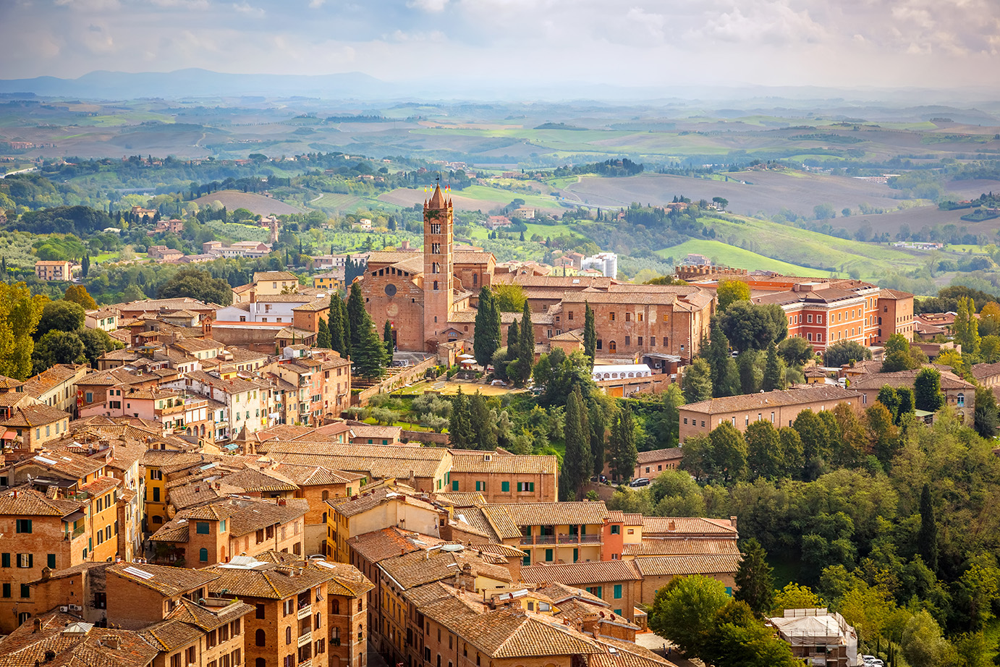
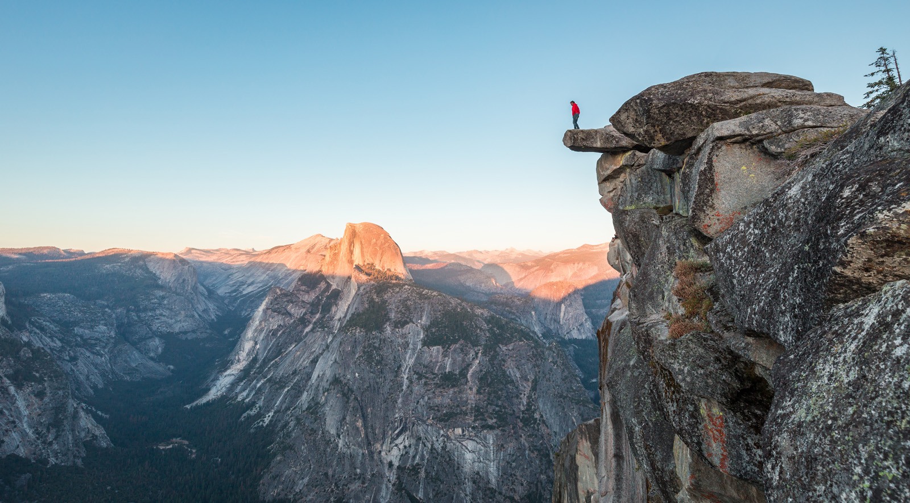

WKND Adventures
Destinations
From Patagonian valleys to Norwegian fjords — where will you go next?
Explore by Region
Yosemite. Patagonia. Sonoran. Costa Rica. From Valley granite to Patagonian wind, the Americas reward ambition at every scale. The Alps. Lofoten. Scotland. The Pyrenees. Old terrain, endlessly new. Europe's wild edges run deeper than most maps suggest. Coming 2026 Expeditions in planning. We're building routes in the Himalayan foothills, New Zealand's South Island, and the Japanese Alps. Subscribe for the first dispatches.

W Circuit, Torres del Paine
undefined
Americas
Europe
High Altitude
Essential Route Reports
Permits & Logistics
The permit systems at the world's most celebrated destinations have become genuinely complicated — and ignoring them doesn't make them go away. Torres del Paine operates a mandatory reservation system through CONAF, Chile's national parks service. Refugio and camping spots on the W Circuit sell out in peak season (December–February) up to six months in advance. The park limits daily entries to specific zones, so "booking late and hoping" is a strategy that ends in Puerto Natales, not on the trail. The WKND Patagonia report includes direct links to the CONAF system and a timeline for when each allocation typically opens. Yosemite's wilderness permit system is different in structure but equally unforgiving. The Half Dome cables day-hike permit is a lottery drawn two days before the intended date — plus a daily walk-up quota that fills within minutes at the trailhead. Multi-day wilderness permits into the backcountry require advance reservation through Recreation.gov from late March. For El Capitan routes on the big walls, there's no permit required for climbing, but bivy sites on the wall are unregulated and specific approach trails have their own seasonal restrictions. The current rules change regularly — always check the NPS Yosemite site directly rather than relying on guidebook editions more than two years old. In the Dolomites, the Alta Via networks are unregulated for hiking, but the network of private rifugios that makes multi-day traverses viable books up entirely in July and August. Most rifugios open bookings in March via their own systems — there's no central booking platform. Our Dolomites destination reports list each hut's booking contact individually, with notes on which ones have waiting list systems worth getting onto. The Italian alpine club (CAI) membership card earns a meaningful discount at affiliated rifugios and is worth the annual fee for anyone spending more than a week in the system. Every WKND trip report includes a dedicated Logistics section covering: trailhead access and nearest public transport, permit requirements with direct links to the official booking system, typical booking lead times by season, and any recent changes to access rules we've been notified about. We update these sections when contributors file corrections. If you find the information has changed, use the report's feedback form — verified corrections are incorporated within 48 hours and credited to the submitter.
Regional Editors
Jordan has been writing about the Americas for WKND since the first issue — from the granite of Yosemite to the wind-scraped pampa of Torres del Paine. His reports are known for their logistical precision: he counts the kilometres, checks the forecast, and still finds time to notice the light on the mountains at hour eight. Alex covers the Alps, the Atlantic coast, and the quieter corners of northern Europe that most travel writing ignores. A former alpine guide with a preference for routes that involve some elevation gain and no crowds, his destination deep dives are the most-read pieces in WKND's archive. Asia-Pacific Taylor is building WKND's Asia-Pacific coverage from scratch — and doing it with the rigour the region deserves. Currently embedded in New Zealand's South Island for the 2026 season, Taylor's first destination reports from the Himalayan foothills and the Japanese Alps are in editing now. Going multi-day? Our expedition reports go deep: daily stage breakdowns, logistics, resupply, accommodation, and honest accounts of conditions. If you're planning more than an overnight, start in the Expeditions section. Before you pack Every destination has its own gear demands — Patagonian wind is not the same problem as Lofoten rain or Sonoran heat. Our gear guides are sorted by terrain and tested in the field.
Every destination starts with a good briefing.
Know the terrain, the weather windows, the access routes, and the stories of people who went before you. The Adventures section covers all of it — from day trips to multi-week expeditions, across every activity we write about.